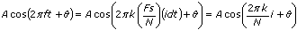

The VI column of the previous table displays the VI name. The Non-DC Unit column displays the output unit for non-DC components where the bin number, or array index, is nonzero. The DC Unit column displays the output unit for the DC or offset component where the bin number is zero, indicating the first element of the spectrum array. k is the spectral bin number defined by the equation f/f = f/(fs/n). V is Volts, and Vrms is Volts root-mean-squared, or Volts rms. VIs with a dB On control map the output unit onto a dB scale by computing 10*log(unit2) if the output unit is normally squared, or 20*log(unit) for non-squared units. These VIs reference all dB values to 1.0.
The Sided column of the previous table displays whether the VI computes the double-sided or single-sided spectrum. A double-sided spectrum has non-DC component magnitudes that the VI halves between the positive and negative frequency bins, corresponding to the first and second halves of the double-sided spectrum array respectively. All double-sided VIs associate a non-unity scale factor with the results, and the Non-DC Scale Factor and DC Scale Factor columns list these values. N is the input time-domain signal size, or the number of samples. A single-sided spectrum returns only the positive frequency components, or the components in the first half of the double-sided spectrum. The single-sided spectrum also compensates for all scale factors these VIs associate with the double-sided spectrum.
The Power Spectrum VI, Auto Power Spectrum VI, FFT Power Spectrum VI, and FFT Power Spectral Density VI compute power as a real quantity and thus return no phase information. The FFT VI, Amplitude and Phase Spectrum VI, FFT Spectrum (Mag-Phase) VI, and FFT Spectrum (Real-Imag) VI compute the real and imaginary parts of the spectrum phase. These VIs reference all phase values to a cosine so that an FFT component at bin k with an amplitude of A volts and radians can be represented as the time-domain signal:

where i = 0, 1, ... N–1.
The Phase Unit column of the previous table displays the resulting phase units. A Phase Unit of radians/degrees indicates that you can use the convert to degree control to change the phase units from radians to degrees.
Refer to the FFT and Power Spectrums Units VI in the labview\examples\Signal Processing\Transforms for an example converting units using the FFT-based VIs.
 f = f/(fs/n). V is Volts, and Vrms is Volts root-mean-squared, or Volts rms. VIs with a dB On control map the output unit onto a dB scale by computing 10*log(unit2) if the output unit is normally squared, or 20*log(unit) for non-squared units. These VIs reference all dB values to 1.0.
f = f/(fs/n). V is Volts, and Vrms is Volts root-mean-squared, or Volts rms. VIs with a dB On control map the output unit onto a dB scale by computing 10*log(unit2) if the output unit is normally squared, or 20*log(unit) for non-squared units. These VIs reference all dB values to 1.0. radians can be represented as the time-domain signal:
radians can be represented as the time-domain signal: